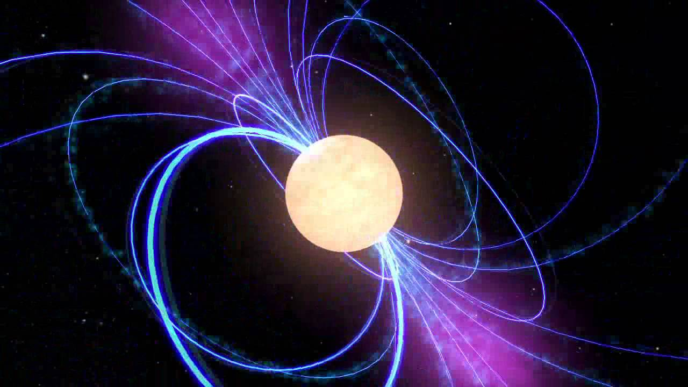

Celestial bodies are naturally-occurring structures, objects, and particles in the Universe that lie beyond the reach of Earth’s atmosphere. The Sun, the Earth, the Moon, Jupiter, Alpha Centauri, the Milky Way, and the Virgo Supercluster are all examples of celestial bodies. Celestial bodies encompass virtually all of the matter within our Universe, with the exception of free protons, electrons, photons and atoms scattered across the expanses of the cosmos. Besides gravitational waves, celestial bodies are the only the only objects in space-time that we can detect via electromagnetic radiation. Many celestial bodies are geologically, chemically, or physically active, and their activity constitutes one of many factors that contribute to the continually changing structure of our Universe. Among the most common celestial bodies in the observable universe are stars, planets, globular clusters, and nebulae. However, countless galaxies, neutron stars, black holes, pulsars, and galactic clusters also abound within the boundaries of the Universe.
Types of Celestial Bodies
- Natural satellites: massive objects that are in orbit around a larger celestial body. Under the right circumstances, any celestial body can be classified as a natural satellite. Common types of natural satellites include planets, meteorites, and comets.
- Stars: vast gaseous objects massive and dense enough in order to perform nuclear fusion and emit electromagnetic radiation. While most stars are initially composed of hydrogen and helium, they produce small quantities of heavier elements near the end of their lifespans, which are dispersed across the cosmos in supernovae. Types of stars include brown dwarfs, white dwarfs, giants, and supergiants.
- Neutron Stars: an extremely dense, compact object composed primarily of tightly-packed neutrons that spins at a rapid rate (as quick as 43,000 rpm).
- Pulsars: a magnetized, rotating neutron star or white dwarf that emits electromagnetic radiation in “pulses” based on its spin rate.
- Black Holes: an infinitely dense singularity with a gravitational field so strong that no matter or radiation can escape once it has entered the event horizon.
- Nebulae: vast clumps of dust, ionized gases, and other types of matter. Although they vary in size, nebulae often give way to stars, black holes, and clusters of celestial bodies.
- Galaxies: considered to be the largest types of celestial bodies in existence. They are gravitationally bound associations of stars, nebulae, black holes, and other celestial bodies. Many galaxies are hypothesized to contain dark matter and harbor supermassive black holes at their centers. Types of galaxies include: irregular, spiral, and barred-spiral.
- Clusters: are tightly-packed groups of similar celestial bodies. Common types of clusters in the Universe include globular clusters (stars), galactic clusters, and galactic superclusters.
